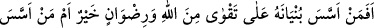
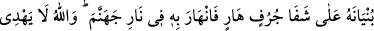
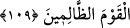
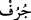
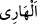

Yıkanmamış yüz, hûrilerin yüzlerini göremez
“Namaz ancak temiz olarak kılınabilir” buyurdu Peygamber
“Tahûr” kelimesi, temizlemek mânâsında masdardır. Bu kelime “Namazın anahtarı
temizliktir”[284] hadisinde bu mânâda kullanılmıştır. Ayrıca kendisiyle temizlenilen şeye
de denir. el-Muğrib’de bu şekilde zikredilmiştir.
109. Binasını Allah korkusu ve rızası üzerine kuran kimse mi daha hayırlıdır,
yoksa yapısını yıkılacak bir yarın kenarına kurup onunla beraber kendisi de çöküp
cehennem ateşine giden kimse mi? Allah zalimler topluluğunu doğru yola iletmez.
Onların durumu bilindikten sonra mescidinin “binâsını Allah korkusu ve rızası”
tâatlerle meşgul olarak onun hoşnutluğunu talep “üzerine kuran kimse mi daha
hayırlıdır,”
Bu cümle, başlangıç cümlesi olup bir önceki âyette bahsedilen kişilerin Mescid-i
Dırâr halkından daha hayırlı olduklarını beyan etmektedir. Âyetin başında yer alan soru
edatı (istifham hemzesi) inkar içindir.
“et-Te’sîs”, binanın temelini sağlam yapmak demektir.
Ayetteki “takvâ (Allah korkusu)” ile onun ikinci derecesi, yani bir şeyi yapmak veya
terk etmekten dolayı günaha girilen her şeyden sakınmak mânâsı kastedilmektedir.
Âyette Mescid-i Dırâr ehlinin inançlarına “hayırlı” denilmesi, kendilerinin hayırlı
olmakta müşterek oldukları inancından ileri gelmektedir.
“yoksa yapısını yıkılacak bir yarın kenarına kurup onunla beraber kendisi de
çöküp cehennem ateşine giden kimse mi?” İki gruptan hangisi daha hayırlıdır? Yani
kendileriyle dostluk kurmaya, birlikte namaz kılmaya hangisi daha lâyıktır? Mescidinin
binasını, Allah’a itaat ve takvâ kasdıyla tesis eden Kubâ Mescidi halkı mı, yoksa
mescidinin binasını nifak, küfür, müminlerin arasını açmak amacıyla ve işi gücü
müslümanlara hiyanet etmek, İslâm’ın gücünü zayıflatmak olan kâfiri beklemek
gayesiyle tesis eden Mescid-i Dırar halkı mı?
Âyetteki ikinci “bünyân” kelimesinin daha önce geçtiği halde yerine zamir gelmeyip
isim olarak tekrar gelmesi, o iki binanın (Kubâ Mescidi ile Dırar Mescidi) hem öz hem
de vasıf ve alâka yönünden birbirinden farklı olduklarını bildirmek içindir.
“ __WORD__ (yar)”, altını sellerin götürdüğü, oyup yediği toprak demektir. “__WORD__ (yıkılacak)” ise çatlamış, düşmek üzere olan mânâsınadır.